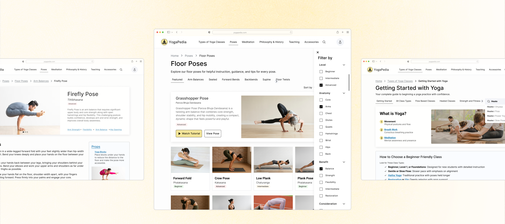

<!DOCTYPE html>
<html lang="en">
<head>
  <meta charset="utf-8"/>
  <meta name="viewport" content="width=device-width, initial-scale=1"/>
  <title>Yogapedia — Sophia Alfred</title>
  <link rel="icon" href="../assets/favicon.png"/>
  <link rel="preconnect" href="https://fonts.googleapis.com"/>
  <link href="https://fonts.googleapis.com/css2?family=Manrope:wght@300;400;500;600&family=IBM+Plex+Mono:wght@400;500&display=swap" rel="stylesheet"/>
  <style>
    @font-face {
      font-family: 'Self Modern';
      src: url('../assets/fonts/Self_Modern_Regular.ttf') format('truetype');
      font-weight: 400; font-style: normal; font-display: swap;
    }
    *, *::before, *::after { margin: 0; padding: 0; box-sizing: border-box; }
    html { scroll-behavior: smooth; }
    body { background: #FFFBF4; color: #1C1C22; -webkit-font-smoothing: antialiased; }
    ::-webkit-scrollbar { width: 6px; }
    ::-webkit-scrollbar-track { background: #FFFBF4; }
    ::-webkit-scrollbar-thumb { background: #A8A8B3; border-radius: 3px; }

    .sidenav {
      position: sticky; top: 56px;
      width: 199px; min-width: 199px;
      height: calc(100vh - 56px);
      padding: 18px;
      background: #FFFBF4;
      border-right: 1px solid rgba(0,0,0,0.06);
      display: flex; flex-direction: column;
      justify-content: space-between;
      flex-shrink: 0; align-self: flex-start;
    }
    .sidenav-top { display: flex; flex-direction: column; gap: 12px; }
    .sidenav-link {
      font-family: 'IBM Plex Mono', monospace; font-weight: 400;
      font-size: 11px; letter-spacing: 0.06em; line-height: 165%;
      text-transform: uppercase; text-decoration: none;
      display: flex; align-items: center; gap: 8px;
      color: #6E6E78; transition: color 0.15s ease;
    }
    .sidenav-link.active { color: #ED5632; font-weight: 500; }
    .sidenav-link:hover { color: #5A5A65; }
    .sidenav-link.home { color: #5A5A65; margin-bottom: 10px; }
    .sidenav-link svg { flex-shrink: 0; }

    .content-pad { padding: 0 clamp(40px, 7vw, 120px); }

    /* ── Timeline ── */
    .ew-timeline { position: relative; margin-top: 8px; }
    .ew-timeline__track {
      position: absolute; left: 0; right: 0; top: 18px;
      height: 1px; background: rgba(28,28,34,0.1);
    }
    .ew-timeline__list {
      list-style: none; margin: 0; padding: 0;
      display: grid;
      grid-template-columns: repeat(7, minmax(90px, 1fr));
      gap: clamp(6px, 1vw, 14px);
      overflow-x: auto; scrollbar-width: none;
      position: relative;
    }
    .ew-timeline__list::-webkit-scrollbar { display: none; }
    .ew-timeline__step { display: grid; gap: 8px; align-content: start; min-width: 90px; }
    .ew-timeline__dot {
      width: 36px; height: 36px; border-radius: 50%;
      background: #ED5632; display: grid; place-items: center;
      font-family: 'IBM Plex Mono', monospace;
      font-size: 13px; font-weight: 500; color: #fff;
      margin: 0 auto; flex-shrink: 0;
    }
    .ew-timeline__label {
      font-family: 'Manrope', sans-serif; font-weight: 400;
      font-size: 11px; line-height: 1.4; color: #5A5A65; text-align: center;
    }

    /* ── V1→V2 L-shaped tree branches ── */
    .v12-tree-list { list-style: none; padding: 0; margin: 0; display: flex; flex-direction: column; gap: 8px; }
    .v12-tree-item { position: relative; padding-left: 26px; display: flex; align-items: baseline; gap: 8px; }
    .v12-tree-item::before {
      content: "";
      position: absolute; left: 4px; top: -0.25em;
      width: 14px; height: 1em;
      border-left: 1.5px solid rgba(28,28,34,0.22);
      border-bottom: 1.5px solid rgba(28,28,34,0.22);
      border-bottom-left-radius: 4px;
    }

    @media (max-width: 768px) { .sidenav { display: none; } }

  </style>
  <script src="https://unpkg.com/react@18.3.1/umd/react.development.js" crossorigin="anonymous"></script>
  <script src="https://unpkg.com/react-dom@18.3.1/umd/react-dom.development.js" crossorigin="anonymous"></script>
  <script src="https://unpkg.com/@babel/standalone@7.29.0/babel.min.js" crossorigin="anonymous"></script>
</head>
<body>
<div id="root"></div>
<script type="text/babel">

function EWNav({ activePage = 'work' }) {
  const [scrolled, setScrolled] = React.useState(false);
  React.useEffect(() => {
    const onScroll = () => setScrolled(window.scrollY > 60);
    window.addEventListener('scroll', onScroll, { passive: true });
    onScroll();
    return () => window.removeEventListener('scroll', onScroll);
  }, []);
  return (
    <nav style={{
      width: '100%', height: 56,
      background: scrolled ? 'rgba(255,251,244,0.92)' : 'rgba(255,251,244,0.001)',
      backdropFilter: 'blur(14px)', WebkitBackdropFilter: 'blur(14px)',
      borderBottom: '1px solid rgba(28,28,34,0.07)',
      display: 'flex', alignItems: 'center',
      justifyContent: 'space-between', padding: '0 24px',
      position: 'fixed', top: 0, zIndex: 100, boxSizing: 'border-box',
      transition: 'background 0.35s ease',
    }}>
      <a href="../index.html" style={{ display: 'flex', alignItems: 'center', textDecoration: 'none' }}>
        
      </a>
      <div style={{ display: 'flex', gap: 24 }}>
        {[
          ['work',   'Work',   '../index.html#case-studies'],
          ['about',  'About',  '../about.html'],
          ['resume', 'Resume', '../assets/sophia-resume.pdf'],
        ].map(([id, label, href]) =>
          <a key={id} href={href}
            target={id === 'resume' ? '_blank' : undefined}
            rel={id === 'resume' ? 'noopener noreferrer' : undefined}
            style={{
              fontFamily: 'Manrope, sans-serif', fontWeight: 500, fontSize: 14,
              letterSpacing: '0.01em', textDecoration: 'none',
              color: activePage === id ? '#1C1C22' : '#7A7A85', transition: 'color 0.2s',
            }}
            onMouseEnter={e => e.target.style.color = '#1C1C22'}
            onMouseLeave={e => e.target.style.color = activePage === id ? '#1C1C22' : '#7A7A85'}>
            {label}
          </a>
        )}
      </div>
    </nav>
  );
}

function EWFooter() {
  return (
    <footer style={{ background: '#1C1C23', boxShadow: '0px 4px 4px rgba(0,0,0,0.25)' }}>
      <div style={{
        borderTop: '1px solid rgba(255,255,255,0.08)', padding: '40px 36px',
        display: 'flex', justifyContent: 'space-between',
        alignItems: 'flex-start', flexWrap: 'wrap', gap: 24
      }}>
        
        <div style={{ display: 'flex', gap: 48 }}>
          {[
            { heading: 'say hi', links: [
              { label: 'LinkedIn', href: 'https://www.linkedin.com/in/sophia-alfred-sca07/' },
              { label: 'Email',    href: 'mailto:sophiacalfred@gmail.com' },
              { label: 'Resume',   href: '../assets/sophia-resume.pdf', external: true },
            ]},
            { heading: 'work', links: [
              { label: 'The Living Record', href: 'living-record.html' },
              { label: 'Garden Tours',      href: 'garden-tours.html' },
              { label: 'Yogapedia',         href: 'yogapedia.html' },
              { label: 'My Art Gallery',    href: '../about.html#gallery' },
            ]},
          ].map(col =>
            <div key={col.heading} style={{ display: 'flex', flexDirection: 'column', gap: 10 }}>
              <div style={{
                fontFamily: 'Manrope, sans-serif', fontWeight: 500, fontSize: 11,
                color: 'rgba(255,255,255,0.5)', letterSpacing: '0.08em',
                textTransform: 'lowercase', marginBottom: 2,
              }}>{col.heading}</div>
              {col.links.map(l =>
                <a key={l.label} href={l.href}
                  target={l.external ? '_blank' : undefined}
                  rel={l.external ? 'noopener noreferrer' : undefined}
                  style={{
                    fontFamily: 'Manrope, sans-serif', fontSize: 13,
                    color: 'rgba(255,255,255,0.35)', letterSpacing: '0.01em',
                    textDecoration: 'none', transition: 'color 0.2s'
                  }}
                  onMouseEnter={e => e.target.style.color = 'rgba(255,255,255,0.85)'}
                  onMouseLeave={e => e.target.style.color = 'rgba(255,255,255,0.35)'}>
                  {l.label}
                </a>
              )}
            </div>
          )}
        </div>
      </div>
      <div style={{ padding: '0 36px 24px', fontFamily: 'Manrope, sans-serif', letterSpacing: '0.02em' }}>
        <div style={{ fontSize: 11, color: 'rgba(255,255,255,0.35)', marginBottom: 4 }}>Portfolio created with Claude Code :)</div>
        <div style={{ fontSize: 11, color: 'rgba(255,255,255,0.2)' }}>© 2026 Sophia Alfred</div>
      </div>
    </footer>
  );
}

const SECTION_IDS = ['overview', 'research', 'insights', 'ia', 'wireframes', 'final-designs', 'impact'];
const NAV_LINKS = [
  { id: 'overview',      label: 'Overview' },
  { id: 'research',      label: 'Research' },
  { id: 'insights',      label: 'Insights' },
  { id: 'ia',            label: 'IA & Testing' },
  { id: 'wireframes',    label: 'Wireframes' },
  { id: 'final-designs', label: 'Final Designs' },
  { id: 'impact',        label: 'Impact' },
];

const ArrowLeft = () => (
  <svg width="12" height="12" viewBox="0 0 12 12" fill="none">
    <path d="M7.5 2L3.5 6L7.5 10" stroke="#5A5A65" strokeWidth="1.2" strokeLinecap="round" strokeLinejoin="round"/>
  </svg>
);
const ArrowUp = () => (
  <svg width="12" height="12" viewBox="0 0 12 12" fill="none" style={{ transform: 'rotate(90deg)' }}>
    <path d="M7.5 2L3.5 6L7.5 10" stroke="#5A5A65" strokeWidth="1.2" strokeLinecap="round" strokeLinejoin="round"/>
  </svg>
);

function SideNav() {
  const [active, setActive] = React.useState('overview');
  React.useEffect(() => {
    const observer = new IntersectionObserver((entries) => {
      entries.forEach(entry => {
        if (entry.isIntersecting) setActive(entry.target.id);
      });
    }, { rootMargin: '-56px 0px -70% 0px', threshold: 0 });
    SECTION_IDS.forEach(id => {
      const el = document.getElementById(id);
      if (el) observer.observe(el);
    });
    return () => observer.disconnect();
  }, []);
  return (
    <aside className="sidenav">
      <div className="sidenav-top">
        <a href="../index.html" className="sidenav-link home">
          <ArrowLeft /> HOME
        </a>
        {NAV_LINKS.map(({ id, label }) => (
          <a key={id} href={`#${id}`}
            className={`sidenav-link${active === id ? ' active' : ''}`}>
            {label}
          </a>
        ))}
      </div>
      <a href="#overview"
        className="sidenav-link home"
        onClick={e => { e.preventDefault(); window.scrollTo({ top: 0, behavior: 'smooth' }); }}>
        <ArrowUp /> BACK TO TOP
      </a>
    </aside>
  );
}

/* ── Shared style tokens ── */
const mono = { fontFamily: "'IBM Plex Mono', monospace" };
const sectionLabel = {
  ...mono, fontSize: 11, fontWeight: 500, letterSpacing: '0.1em',
  textTransform: 'uppercase', color: '#ED5632', marginBottom: 8,
};
const sectionHeading = {
  fontFamily: 'Manrope, sans-serif', fontWeight: 500,
  fontSize: 'clamp(16px, 1.6vw, 20px)', lineHeight: 1.35,
  color: '#1C1C22', marginBottom: 8,
};
const bodyText = {
  fontFamily: 'Manrope, sans-serif', fontWeight: 400,
  fontSize: 14, lineHeight: '21px', color: '#7A7A85',
};
/* Passing WCAG AA label style — darker than #A8A8B3 */
const metaLabel = {
  ...mono, fontSize: 10, fontWeight: 500, letterSpacing: '0.1em',
  textTransform: 'uppercase', color: '#5A5A65',
};

/* ── Lightbox with zoom + pan ── */
function Lightbox({ src, alt, onClose }) {
  const [xform, setXform] = React.useState({ scale: 1, tx: 0, ty: 0 });
  const isPanning = React.useRef(false);
  const panStart = React.useRef({ x: 0, y: 0 });
  const imgStart = React.useRef({ x: 0, y: 0 });
  const stageRef = React.useRef(null);

  React.useEffect(() => {
    const handler = (e) => { if (e.key === 'Escape') onClose(); };
    document.addEventListener('keydown', handler);
    document.body.style.overflow = 'hidden';
    return () => {
      document.removeEventListener('keydown', handler);
      document.body.style.overflow = '';
    };
  }, [onClose]);

  const clamp = (s) => Math.min(6, Math.max(1, s));

  const zoom = (delta, cx, cy) => {
    setXform(prev => {
      const newScale = clamp(prev.scale + delta);
      let tx = prev.tx, ty = prev.ty;
      if (cx != null && stageRef.current) {
        const rect = stageRef.current.getBoundingClientRect();
        const x = cx - (rect.left + rect.width / 2);
        const y = cy - (rect.top + rect.height / 2);
        const k = newScale / prev.scale;
        tx = prev.tx + x * (1 - k);
        ty = prev.ty + y * (1 - k);
      }
      return { scale: newScale, tx, ty };
    });
  };

  const handleWheel = (e) => {
    e.preventDefault();
    zoom(e.deltaY > 0 ? -0.25 : 0.25, e.clientX, e.clientY);
  };

  const handlePointerDown = (e) => {
    isPanning.current = true;
    stageRef.current?.setPointerCapture(e.pointerId);
    panStart.current = { x: e.clientX, y: e.clientY };
    imgStart.current = { x: xform.tx, y: xform.ty };
  };

  const handlePointerMove = (e) => {
    if (!isPanning.current) return;
    setXform(prev => ({
      ...prev,
      tx: imgStart.current.x + (e.clientX - panStart.current.x),
      ty: imgStart.current.y + (e.clientY - panStart.current.y),
    }));
  };

  const handlePointerUp = () => { isPanning.current = false; };

  const reset = () => setXform({ scale: 1, tx: 0, ty: 0 });

  const imgCSS = `translate(calc(-50% + ${xform.tx}px), calc(-50% + ${xform.ty}px)) scale(${xform.scale})`;

  return (
    <div style={{ position: 'fixed', inset: 0, zIndex: 1000 }}>
      {/* Backdrop */}
      <div onClick={onClose} style={{ position: 'absolute', inset: 0, background: 'rgba(28,28,34,0.78)' }} />

      {/* Panel */}
      <div style={{
        position: 'absolute',
        inset: 'clamp(10px, 2vw, 22px)',
        display: 'grid',
        gridTemplateRows: 'auto 1fr auto',
        gap: 0,
        background: 'rgba(255,255,255,0.97)',
        borderRadius: 12,
        overflow: 'hidden',
        boxShadow: '0 24px 64px rgba(28,28,34,0.22)',
      }}>
        {/* Top bar */}
        <div style={{
          display: 'flex', alignItems: 'center', justifyContent: 'space-between',
          padding: '10px 14px', borderBottom: '1px solid rgba(28,28,34,0.08)',
          background: '#fff',
        }}>
          <div style={{ fontFamily: 'Manrope, sans-serif', fontWeight: 400, color: '#1C1C22', fontSize: 15 }}>{alt}</div>
          <div style={{ display: 'flex', gap: 6, alignItems: 'center' }}>
            {[
              { label: '−',     fn: () => zoom(-0.5),  aria: 'Zoom out' },
              { label: '+',     fn: () => zoom(0.5),   aria: 'Zoom in' },
              { label: 'Reset', fn: reset,             aria: 'Reset view' },
              { label: '✕',     fn: onClose,           aria: 'Close' },
            ].map(({ label, fn, aria }) => (
              <button key={label} onClick={fn} aria-label={aria} style={{
                border: '1px solid rgba(28,28,34,0.15)', background: 'transparent',
                borderRadius: 999, padding: label === 'Reset' ? '5px 10px' : '5px 9px',
                fontFamily: 'Manrope, sans-serif', fontSize: 13, cursor: 'pointer',
                color: '#1C1C22', lineHeight: 1,
              }}>{label}</button>
            ))}
          </div>
        </div>

        {/* Stage */}
        <div
          ref={stageRef}
          onWheel={handleWheel}
          onPointerDown={handlePointerDown}
          onPointerMove={handlePointerMove}
          onPointerUp={handlePointerUp}
          onPointerCancel={handlePointerUp}
          style={{
            position: 'relative', overflow: 'hidden',
            background: '#fff', margin: '10px',
            borderRadius: 8, border: '1px solid rgba(28,28,34,0.08)',
            cursor: 'grab', touchAction: 'none',
          }}
        >
          
        </div>

        {/* Hint */}
        <div style={{
          padding: '6px 16px 10px',
          fontFamily: "'IBM Plex Mono', monospace", fontSize: 10,
          color: '#7A7A85', letterSpacing: '0.04em',
        }}>
          Scroll to zoom · drag to pan · Esc to close
        </div>
      </div>
    </div>
  );
}

function ZoomableImage({ src, alt, caption, wrapStyle, hideHint, imgStyle }) {
  const [open, setOpen] = React.useState(false);
  return (
    <>
      <figure style={{ margin: 0, ...wrapStyle }}>
        <div onClick={() => setOpen(true)} style={{ cursor: 'zoom-in', position: 'relative', display: 'inline-block', width: '100%' }}>
          
          {!hideHint && (
            <span style={{
              position: 'absolute', top: 10, left: 10,
              background: '#fff', color: '#5A5A65', borderRadius: 3,
              padding: '3px 8px', fontSize: 10, fontFamily: "'IBM Plex Mono', monospace",
              letterSpacing: '0.05em', pointerEvents: 'none',
              boxShadow: '0 1px 4px rgba(28,28,34,0.12)',
            }}>click to expand</span>
          )}
        </div>
        {caption && (
          <figcaption style={{ fontFamily: 'Manrope, sans-serif', fontSize: 12, color: '#5A5A65', marginTop: 8, lineHeight: 1.5 }}>
            {caption}
          </figcaption>
        )}
      </figure>
      {open && <Lightbox src={src} alt={alt} onClose={() => setOpen(false)} />}
    </>
  );
}

/* ── Divider ── */
const Divider = () => (
  <div style={{ borderTop: '1px solid rgba(28,28,34,0.08)', margin: '40px 0' }} />
);

/* ── Callout ── */
function Callout({ label, children }) {
  return (
    <div style={{
      background: 'rgba(237,86,50,0.07)', border: '1px solid rgba(237,86,50,0.18)',
      borderRadius: 4, padding: '12px 16px', display: 'flex', gap: 12, alignItems: 'center',
    }}>
      <span style={{ ...mono, fontSize: 10, color: '#ED5632', whiteSpace: 'nowrap', letterSpacing: '0.08em', flexShrink: 0 }}>{label}</span>
      <span style={{ fontFamily: 'Manrope, sans-serif', fontSize: 13, color: '#5A5A65', lineHeight: 1.6 }}>{children}</span>
    </div>
  );
}

/* ── Alert icon ── */
const AlertIcon = () => (
  <svg xmlns="http://www.w3.org/2000/svg" width="22" height="22" viewBox="0 0 24 24"
    fill="none" stroke="#ED5632" strokeWidth="1" strokeLinecap="round" strokeLinejoin="round"
    style={{ flexShrink: 0 }}>
    <path d="m21.73 18-8-14a2 2 0 0 0-3.48 0l-8 14A2 2 0 0 0 4 21h16a2 2 0 0 0 1.73-3"/>
    <path d="M12 9v4"/>
    <path d="M12 17h.01"/>
  </svg>
);

/* ── Wireframe card: full card is the click target ── */
function WireframeCard({ src, title, desc }) {
  const [open, setOpen] = React.useState(false);
  return (
    <>
      <div onClick={() => setOpen(true)} style={{
        background: '#FFFFFF', border: '1px solid #DAD7D7', borderRadius: 4,
        overflow: 'hidden', display: 'flex', flexDirection: 'column',
        cursor: 'zoom-in',
      }}>
        
        <div style={{ padding: '12px 14px', flex: 1, display: 'flex', flexDirection: 'column', justifyContent: 'flex-end' }}>
          <div style={{ fontFamily: 'Manrope, sans-serif', fontWeight: 500, fontSize: 13, color: '#1C1C22', marginBottom: 4 }}>{title}</div>
          <div style={{ fontFamily: 'Manrope, sans-serif', fontSize: 11, color: '#7A7A85', lineHeight: 1.5 }}>{desc}</div>
        </div>
      </div>
      {open && <Lightbox src={src} alt={title} onClose={() => setOpen(false)} />}
    </>
  );
}

/* ══════════════════════════════════════════════
   PAGE
══════════════════════════════════════════════ */
function YogapediaPage() {
  return (
    <div style={{ minHeight: '100vh', display: 'flex', flexDirection: 'column', background: '#FFFBF4' }}>
      <EWNav activePage="work" />

      {/* COVER — sits under the fixed nav (no marginTop) */}
      <div style={{ width: '100%', aspectRatio: '16/7', background: '#F2E08A', position: 'relative', overflow: 'hidden' }}>
        
      </div>

      {/* PAGE LAYOUT */}
      <div style={{ display: 'flex', flex: 1 }}>
        <SideNav />

        <main style={{ flex: 1, minWidth: 0, paddingBottom: 80 }}>

          {/* ══ OVERVIEW ══ */}
          <section id="overview" style={{ paddingTop: 48 }}>
            <div className="content-pad">
              <div style={{ ...mono, fontSize: 11, letterSpacing: '0.08em', textTransform: 'uppercase', color: '#5A5A65', marginBottom: 8 }}>
                Information Architecture · Fall 2025
              </div>
              <h2 style={{ fontFamily: "'Self Modern', serif", fontWeight: 400, fontSize: 'clamp(24px, 3.5vw, 44px)', color: '#1C1C22', lineHeight: 1.1, marginBottom: 24 }}>
                Yogapedia
              </h2>

              {/* Meta strip */}
              <div style={{
                display: 'grid', gridTemplateColumns: 'repeat(4, 1fr)', gap: 16,
                borderTop: '1px solid rgba(28,28,34,0.1)', paddingTop: 16, marginBottom: 32,
              }}>
                {[
                  { label: 'Timeline', value: 'Oct 2025 – Dec 2025' },
                  { label: 'Role',     value: 'Information Architect' },
                  { label: 'Focus',    value: 'Information Architecture\nTaxonomy Design' },
                  { label: 'Tools',    value: 'UX Tweak\nFigma' },
                ].map(({ label, value }) => (
                  <div key={label}>
                    <div style={{ ...mono, fontSize: 10, fontWeight: 500, letterSpacing: '0.1em', textTransform: 'uppercase', color: '#ED5632', marginBottom: 6 }}>{label}</div>
                    <div style={{ fontFamily: 'Manrope, sans-serif', fontSize: 13, color: '#5A5A65', lineHeight: 1.65, whiteSpace: 'pre-line' }}>{value}</div>
                  </div>
                ))}
              </div>

              <div style={sectionLabel}>Overview</div>
              <h3 style={{ fontFamily: 'Manrope, sans-serif', fontWeight: 400, fontSize: 'clamp(15px, 1.5vw, 18px)', lineHeight: 1.55, color: '#1C1C22', marginBottom: 12 }}>
                How do you organize a complex domain so that beginners and experienced teachers can both find what they need?
              </h3>
              <p style={{ ...bodyText, marginBottom: 32 }}>
                Yogapedia is an information resource designed to help yoga teachers and practitioners easily find, explore, and understand Western yoga poses, styles, and concepts. I built the information architecture from the ground up through domain research, card sorting, and tree testing, creating a taxonomy system that optimizes findability, discoverability, and understandability.
              </p>

              {/* IA Lens */}
              <div style={{ marginBottom: 32 }}>
                <div style={{ ...metaLabel, marginBottom: 4 }}>IA Lens</div>
                <p style={{ ...bodyText, marginBottom: 16 }}>For this project, the focus was on:</p>
                <div style={{ display: 'grid', gridTemplateColumns: 'repeat(3, 1fr)', gap: 16 }}>
                  {[
                    { title: 'Findability',       body: 'Can users locate known items (e.g., "Power Yoga benefits") quickly and confidently?' },
                    { title: 'Discoverability',   body: 'Do labels + structure support exploration (e.g., "related poses", "prep sequences")?' },
                    { title: 'Understandability', body: 'Does the hierarchy match mental models (less jargon, more meaning?)' },
                  ].map(({ title, body }) => (
                    <div key={title} style={{ background: '#FFFFFF', borderRadius: 4, border: '1px solid #DAD7D7', padding: '20px' }}>
                      <div style={{ fontFamily: 'Manrope, sans-serif', fontWeight: 500, fontSize: 14, color: '#1C1C22', marginBottom: 6 }}>{title}</div>
                      <div style={{ fontFamily: 'Manrope, sans-serif', fontSize: 12, color: '#7A7A85', lineHeight: '18px' }}>{body}</div>
                    </div>
                  ))}
                </div>
              </div>

              <a href="#final-designs" style={{
                display: 'inline-flex', alignItems: 'center', gap: 10,
                background: 'rgba(237,86,50,0.12)', borderRadius: 5,
                padding: '10px 18px', textDecoration: 'none',
              }}>
                <span style={{ ...mono, fontSize: 11, fontWeight: 500, letterSpacing: '0.08em', textTransform: 'uppercase', color: '#ED5632' }}>Jump to Final Designs</span>
                <span style={{ color: '#ED5632', fontSize: 14, lineHeight: 1 }}>↓</span>
              </a>

              {/* Timeline */}
              <div style={{ marginTop: 40 }}>
                <p style={{ ...bodyText, marginBottom: 20 }}>Here's the path I took:</p>
                <div className="ew-timeline">
                  <div className="ew-timeline__track" />
                  <ol className="ew-timeline__list" role="list">
                    {[
                      'Domain expert interviews & domain model',
                      'Open card sort',
                      'Tree tests',
                      'Structure map',
                      'User flow',
                      'Wireframe',
                      'Evaluation & iteration',
                    ].map((label, i) => (
                      <li key={i} className="ew-timeline__step">
                        <span className="ew-timeline__dot">{i + 1}</span>
                        <span className="ew-timeline__label">{label}</span>
                      </li>
                    ))}
                  </ol>
                </div>
              </div>

            </div>
          </section>

          {/* ══ RESEARCH ══ */}
          <section id="research" style={{ paddingTop: 48 }}>
            <div className="content-pad">
              <div style={sectionLabel}>Research</div>
              <h3 style={sectionHeading}>Understanding the problem space</h3>

              {/* Problem statement */}
              <div style={{
                background: '#FFFFFF', border: '1px solid #DAD7D7', borderRadius: 4,
                padding: '18px 20px', marginBottom: 32,
                display: 'flex', gap: 14, alignItems: 'flex-start',
              }}>
                <AlertIcon />
                <p style={{ ...bodyText, margin: 0 }}>
                  Existing yoga learning resources are difficult to navigate due to inconsistent structure, labelling, and taxonomy. This makes it challenging for practitioners and teachers to find, understand, and compare information across poses, styles, and yogic concepts.
                </p>
              </div>

              {/* Competitor analysis */}
              <h3 style={{ ...sectionHeading, marginBottom: 8 }}>Competitor Analysis</h3>
              <p style={{ ...bodyText, marginBottom: 20 }}>
                I analysed three existing yoga resources across four key IA dimensions to identify where existing tools fall short.
              </p>

              <div style={{ overflowX: 'auto', marginBottom: 8 }}>
                <table style={{ width: '100%', borderCollapse: 'collapse', minWidth: 580, fontFamily: 'Manrope, sans-serif', fontSize: 13 }}>
                  <thead>
                    <tr style={{ borderBottom: '1px solid #DAD7D7' }}>
                      <th style={{ width: '22%', padding: '10px 12px', textAlign: 'left', color: '#5A5A65', fontWeight: 500, fontSize: 10, letterSpacing: '0.08em', textTransform: 'uppercase' }}>
                        Comparison of 3 yoga resources
                      </th>
                      {[
                        { name: 'Yoga Journal',  sub: 'Editorial + Learning' },
                        { name: 'Tummee',        sub: 'Teacher Tools' },
                        { name: 'Pocket Yoga',   sub: 'Pose Dictionary' },
                      ].map(({ name, sub }) => (
                        <th key={name} style={{ padding: '10px 12px', textAlign: 'left', fontWeight: 500, color: '#1C1C22' }}>
                          {name}
                          <div style={{ ...mono, fontSize: 10, color: '#ED5632', fontWeight: 400, marginTop: 3, letterSpacing: '0.06em' }}>{sub}</div>
                        </th>
                      ))}
                    </tr>
                  </thead>
                  <tbody>
                    {[
                      {
                        criterion: 'Labelling & hierarchy',
                        sub: 'Do nav labels match user expectations?',
                        values: [
                          { r: 'red',    t: 'Ambiguous' },
                          { r: 'yellow', t: 'Dense, expert' },
                          { r: 'yellow', t: 'Simple, limited' },
                        ],
                      },
                      {
                        criterion: 'Filtering',
                        sub: 'Can users filter by multiple attributes?',
                        values: [
                          { r: 'red',    t: 'None' },
                          { r: 'yellow', t: 'Non-faceted' },
                          { r: 'red',    t: 'None' },
                        ],
                      },
                      {
                        criterion: 'Search assistance',
                        sub: 'Autosuggest, autocorrect, term consistency',
                        values: [
                          { r: 'red', t: 'No search at all' },
                          { r: 'red', t: 'No error recovery' },
                          { r: 'red', t: 'No error recovery' },
                        ],
                      },
                      {
                        criterion: 'Browsing',
                        sub: 'Can users browse to find and discover content?',
                        values: [
                          { r: 'red',    t: 'Hard to locate, deep nav' },
                          { r: 'yellow', t: 'Information dense' },
                          { r: 'red',    t: 'Scrolling heavy' },
                        ],
                      },
                    ].map(({ criterion, sub, values }, i) => (
                      <tr key={criterion} style={{ borderBottom: '1px solid rgba(28,28,34,0.07)', background: i % 2 !== 0 ? 'rgba(28,28,34,0.02)' : 'transparent' }}>
                        <td style={{ padding: '14px 12px', verticalAlign: 'middle' }}>
                          <div style={{ fontWeight: 500, color: '#1C1C22', marginBottom: 3 }}>{criterion}</div>
                          <div style={{ fontSize: 11, color: '#5A5A65', lineHeight: 1.45 }}>{sub}</div>
                        </td>
                        {values.map(({ r, t }, j) => (
                          <td key={j} style={{ padding: '14px 12px', verticalAlign: 'middle', color: '#5A5A65' }}>
                            <span style={{ display: 'inline-flex', alignItems: 'center', gap: 8 }}>
                              <span style={{
                                display: 'inline-block', width: 8, height: 8, borderRadius: '50%', flexShrink: 0,
                                background: r === 'red' ? '#E5533D' : '#F5A623',
                              }} />
                              {t}
                            </span>
                          </td>
                        ))}
                      </tr>
                    ))}
                  </tbody>
                </table>
              </div>
            </div>
          </section>

          {/* ══ INSIGHTS ══ */}
          <section id="insights" style={{ paddingTop: 48 }}>
            <div className="content-pad">
              <div style={sectionLabel}>Insights</div>
              <h3 style={sectionHeading}>Understanding the domain</h3>
              <p style={{ ...bodyText, marginBottom: 24 }}>
                The first step was to get a solid handle on the domain of Western yoga. I interviewed{' '}
                <strong style={{ color: '#1C1C22' }}>three yoga teachers</strong> (avg.{' '}
                <strong style={{ color: '#1C1C22' }}>7 years</strong> teaching experience), coding transcripts
                for entities and relationships to build a domain model.
              </p>

              {/* Domain model — 1/3 width, centered */}
              <div style={{ width: '50%', margin: '0 auto' }}>
                <ZoomableImage
                  src="../assets/yogapedia/domain_model.png"
                  alt="Domain model for Western Yoga"
                  caption="Domain model central themes: poses, meditation, and breath work"
                />
              </div>

              <Divider />

              {/* Card sort */}
              <h3 style={{ ...sectionHeading, marginBottom: 8 }}>Card Sort: Understanding Mental Models</h3>
              <p style={{ ...bodyText, marginBottom: 20 }}>
                I ran an open card sort with <strong style={{ color: '#1C1C22' }}>6 participants</strong> (yoga teachers and practitioners) to understand how people naturally group yoga concepts. Two signals informed the structure map: the labels participants used, and the groupings with the highest agreement.
              </p>

              {/* Strongest label signal — white bg, bar stacked below text */}
              <div style={{ background: '#FFFFFF', border: '1px solid #DAD7D7', borderRadius: 4, padding: '16px 20px', marginBottom: 20 }}>
                <div style={{ ...metaLabel, marginBottom: 4 }}>Strongest label signal</div>
                <div style={{ fontFamily: 'Manrope, sans-serif', fontWeight: 500, fontSize: 15, color: '#1C1C22', marginBottom: 2 }}>"Types of Yoga"</div>
                <div style={{ fontFamily: 'Manrope, sans-serif', fontSize: 13, color: '#5A5A65', marginBottom: 14 }}>4 of 6 participants labelled yoga styles as "Types of Yoga"</div>
                <div style={{ display: 'flex', alignItems: 'center', gap: 12 }}>
                  <div style={{ flex: 1, height: 8, background: 'rgba(28,28,34,0.1)', borderRadius: 999, overflow: 'hidden' }}>
                    <div style={{ width: '66.7%', height: '100%', background: '#ED5632', borderRadius: 999 }} />
                  </div>
                  <span style={{ fontFamily: 'Manrope, sans-serif', fontSize: 13, color: '#5A5A65', whiteSpace: 'nowrap' }}>66.7%</span>
                </div>
              </div>

              {/* Highest agreement groupings */}
              <div style={{ ...metaLabel, marginBottom: 12 }}>Highest agreement groupings</div>
              <div style={{ display: 'grid', gridTemplateColumns: 'repeat(3, 1fr)', gap: 16 }}>
                {[
                  { title: 'Physical Postures', pct: '100% Agreement', count: '7 items', chips: ['Standing', 'Balancing', 'Backbends', 'Forward Bends', 'Twists', 'Restorative', 'Savasana'] },
                  { title: 'Equipment',         pct: '92% Agreement',  count: '4 items', chips: ['Mats', 'Blocks', 'Straps', 'Bolsters'] },
                  { title: 'Yoga Styles',       pct: '83% Agreement',  count: '11 items', chips: ['Hatha', 'Ashtanga', 'Iyengar', 'Aerial', 'Yin', 'Restorative', 'Yoga Sculpt', 'Hot Yoga', 'Vinyasa', 'Hot Power', 'Prenatal'] },
                ].map(({ title, pct, count, chips }) => (
                  <div key={title} style={{ background: '#FFFFFF', border: '1px solid #DAD7D7', borderRadius: 4, padding: '18px' }}>
                    <div style={{ display: 'flex', justifyContent: 'space-between', alignItems: 'baseline', marginBottom: 4, gap: 8, flexWrap: 'wrap' }}>
                      <div style={{ fontFamily: 'Manrope, sans-serif', fontWeight: 500, fontSize: 14, color: '#1C1C22' }}>{title}</div>
                      <div style={{ ...mono, fontSize: 10, color: '#ED5632' }}>{pct}</div>
                    </div>
                    <div style={{ fontFamily: 'Manrope, sans-serif', fontSize: 11, color: '#5A5A65', marginBottom: 12 }}>{count}</div>
                    <div style={{ display: 'flex', flexWrap: 'wrap', gap: 6 }}>
                      {chips.map(c => (
                        <span key={c} style={{
                          display: 'inline-block', padding: '4px 10px', borderRadius: 999,
                          border: '1px solid rgba(28,28,34,0.12)', background: '#F5F4F7',
                          fontFamily: 'Manrope, sans-serif', fontSize: 12, color: '#5A5A65',
                        }}>{c}</span>
                      ))}
                    </div>
                  </div>
                ))}
              </div>

              {/* Card sort impact */}
              <div style={{ marginTop: 20 }}>
                <div style={{ ...metaLabel, marginBottom: 10 }}>Impact</div>
                <div style={{ display: 'flex', flexDirection: 'column', gap: 6 }}>
                  {[
                    'I used the highest agreement clusters to confirm which entities should share a parent category.',
                    'I used participant labels (especially "Types of Yoga") to guide top level naming.',
                  ].map((item, i) => (
                    <div key={i} style={{ display: 'flex', gap: 10, alignItems: 'flex-start' }}>
                      <span style={{ color: '#ED5632', fontSize: 14, lineHeight: '21px', flexShrink: 0 }}>•</span>
                      <span style={{ ...bodyText, margin: 0 }}>{item}</span>
                    </div>
                  ))}
                </div>
              </div>

            </div>
          </section>

          {/* ══ IA & TESTING ══ */}
          <section id="ia" style={{ paddingTop: 48 }}>
            <div className="content-pad">
              <div style={sectionLabel}>Information Architecture</div>
              <h3 style={sectionHeading}>Tree testing the structure</h3>
              <p style={{ ...bodyText, marginBottom: 24 }}>
                Using the card sort results as a guide, I created a structure map and tested it with a tree test to measure findability using only labels and hierarchy. Participants were recruited from Reddit's r/yogateachers community.
              </p>

              {/* Tree test v1 — white background */}
              <div style={{ background: '#FFFFFF', border: '1px solid #DAD7D7', borderRadius: 4, padding: '20px 24px', marginBottom: 24 }}>
                <div style={{ display: 'flex', justifyContent: 'space-between', alignItems: 'baseline', marginBottom: 16, flexWrap: 'wrap', gap: 8 }}>
                  <div style={{ fontFamily: 'Manrope, sans-serif', fontWeight: 500, fontSize: 14, color: '#1C1C22' }}>Tree Test 1 — Lowest Performing Tasks</div>
                  <div style={{ ...mono, fontSize: 10, color: '#5A5A65' }}>n=22, 8 tasks</div>
                </div>
                {[
                  { task: 'Where would you find information about the benefits of Power Yoga?', pct: 45.5 },
                  { task: 'Where would you find what you can expect from a Yoga Sculpt class?', pct: 50.0 },
                ].map(({ task, pct }) => (
                  <div key={task} style={{ marginBottom: 16 }}>
                    <div style={{ fontFamily: 'Manrope, sans-serif', fontSize: 13, color: '#5A5A65', marginBottom: 8 }}>{task}</div>
                    <div style={{ display: 'flex', alignItems: 'center', gap: 12 }}>
                      <div style={{ flex: 1, height: 8, background: 'rgba(28,28,34,0.1)', borderRadius: 999, overflow: 'hidden' }}>
                        <div style={{ width: `${pct}%`, height: '100%', background: '#E5533D', borderRadius: 999 }} />
                      </div>
                      <span style={{ ...mono, fontSize: 11, color: '#5A5A65', minWidth: 40 }}>{pct}%</span>
                    </div>
                  </div>
                ))}
                <Callout label="KEY LEARNING">
                  For "class type" findability tasks, success was <strong style={{ color: '#1C1C22' }}>47%</strong> — indicating friction in the current labels or hierarchy.
                </Callout>
              </div>

              {/* V1 → V2 */}
              <h3 style={{ ...sectionHeading, marginBottom: 8 }}>Iterating the Structure</h3>
              <p style={{ ...bodyText, marginBottom: 20 }}>
                The first tree test showed friction in "class type" tasks. In v1, class types were organized around traditional yoga categories (e.g., Hatha / Vinyasa). I reorganized them into <strong style={{ color: '#1C1C22' }}>thematic groupings</strong> that matched how participants naturally talked about yoga classes.
              </p>

              <div style={{ display: 'grid', gridTemplateColumns: '1fr 80px 1fr', gap: 32, alignItems: 'center', marginBottom: 24 }}>
                {/* V1 */}
                <div style={{ background: '#FFFFFF', border: '1px solid #DAD7D7', borderRadius: 4, padding: '18px' }}>
                  <div style={{ ...metaLabel, marginBottom: 10 }}>Version 1</div>
                  <div style={{ fontFamily: 'Manrope, sans-serif', fontWeight: 500, fontSize: 13, color: '#1C1C22', marginBottom: 12 }}>Types of Yoga</div>
                  <ul className="v12-tree-list">
                    {[['Vinyasa', 'ex: Power Yoga'], ['Hatha', 'ex: Iyengar'], ['Hot Yoga', 'ex: Bikram'], ['Restorative', 'ex: Yin Yoga'], ['More', 'ex: Yoga Sculpt']].map(([name, ex]) => (
                      <li key={name} className="v12-tree-item">
                        <span style={{ fontFamily: 'Manrope, sans-serif', fontSize: 13, color: '#5A5A65' }}>{name}</span>
                        <span style={{ fontFamily: 'Manrope, sans-serif', fontSize: 11, color: '#5A5A65', opacity: 0.7 }}>{ex}</span>
                      </li>
                    ))}
                  </ul>
                </div>
                {/* Arrow */}
                <div style={{ display: 'flex', alignItems: 'center', justifyContent: 'center' }}>
                  <svg width="80" height="20" viewBox="0 0 80 20" fill="none" stroke="#A8A8B3" strokeWidth="1.5" strokeLinecap="round" strokeLinejoin="round">
                    <path d="M2 10h68"/>
                    <path d="m62 4 8 6-8 6"/>
                  </svg>
                </div>
                {/* V2 */}
                <div style={{ background: '#FFFFFF', border: '1px solid #DAD7D7', borderRadius: 4, padding: '18px' }}>
                  <div style={{ ...metaLabel, marginBottom: 10 }}>Version 2</div>
                  <div style={{ fontFamily: 'Manrope, sans-serif', fontWeight: 500, fontSize: 13, color: '#1C1C22', marginBottom: 12 }}>Types of Yoga Classes</div>
                  <ul className="v12-tree-list">
                    {[['Flow Based Classes', 'ex: Power, Vinyasa'], ['Heated Classes', 'ex: Bikram'], ['Strength & Fitness', 'ex: Yoga Sculpt, Power'], ['Gentle & Restorative', 'ex: Yin Yoga'], ['Non Traditional', 'ex: Aerial, Yoga Sculpt']].map(([name, ex]) => (
                      <li key={name} className="v12-tree-item">
                        <span style={{ fontFamily: 'Manrope, sans-serif', fontSize: 13, color: '#1C1C22' }}>{name}</span>
                        <span style={{ fontFamily: 'Manrope, sans-serif', fontSize: 11, color: '#5A5A65', opacity: 0.7 }}>{ex}</span>
                      </li>
                    ))}
                  </ul>
                </div>
              </div>

              {/* Success rate comparison — white bg, red v1, blue v2 */}
              <div style={{ background: '#FFFFFF', border: '1px solid #DAD7D7', borderRadius: 4, padding: '20px 24px', marginBottom: 32 }}>
                <div style={{ fontFamily: 'Manrope, sans-serif', fontWeight: 500, fontSize: 14, color: '#1C1C22', marginBottom: 16 }}>Success rate improvement for class type findability tasks</div>
                {[
                  { label: 'Tree test 1 (n=22)', pct: 47, color: '#E5533D' },
                  { label: 'Tree test 2 (n=5)',  pct: 93, color: '#046EEB' },
                ].map(({ label, pct, color }) => (
                  <div key={label} style={{ display: 'flex', alignItems: 'center', gap: 14, marginBottom: 12 }}>
                    <div style={{ fontFamily: 'Manrope, sans-serif', fontSize: 13, color: '#5A5A65', minWidth: 230 }}>{label}</div>
                    <div style={{ flex: 1, height: 10, background: 'rgba(28,28,34,0.1)', borderRadius: 999, overflow: 'hidden' }}>
                      <div style={{ width: `${pct}%`, height: '100%', background: color, borderRadius: 999 }} />
                    </div>
                    <span style={{ ...mono, fontSize: 12, color: '#5A5A65', minWidth: 36 }}>{pct}%</span>
                  </div>
                ))}
                <Callout label="TAKEAWAY">
                  Revised labels and thematic groupings increased class type findability from <strong style={{ color: '#1C1C22' }}>47% → 93%</strong>.
                </Callout>
              </div>

              {/* Structure map — 1/3 width, centered */}
              <h3 style={{ ...sectionHeading, marginBottom: 16 }}>Final Structure Map</h3>
              <div style={{ width: '60%', margin: '0 auto' }}>
                <ZoomableImage
                  src="../assets/yogapedia/structure_map.png"
                  alt="Final structure map for Yogapedia"
                  caption="Final structure map informed by card sort and tree testing insights"
                />
              </div>

              <Divider />

              {/* User flow */}
              <h3 style={{ ...sectionHeading, marginBottom: 8 }}>User Flow</h3>
              <p style={{ ...bodyText, marginBottom: 16 }}>
                With the structure validated, I translated the information hierarchy into a detailed user flow modelling both known item retrieval (finding a specific pose) and guided discovery (related concepts).
              </p>
              <ZoomableImage
                src="../assets/yogapedia/User_Flow.png"
                alt="User flow diagram for Yogapedia"
                caption="User flow modeling findability and discoverability pathways across the site"
              />
            </div>
          </section>

          {/* ══ WIREFRAMES ══ */}
          <section id="wireframes" style={{ paddingTop: 48 }}>
            <div className="content-pad">
              <div style={sectionLabel}>Wireframes</div>
              <h3 style={sectionHeading}>Key IA patterns in the design</h3>
              <p style={{ ...bodyText, marginBottom: 24 }}>
                The component design operationalizes the taxonomy through faceted navigation, controlled vocabulary search, descriptive metadata, and search safety nets.
              </p>
              <div style={{ ...mono, fontSize: 10, color: '#5A5A65', letterSpacing: '0.05em', marginBottom: 12 }}>
                Click any card to expand
              </div>
              <div style={{ display: 'grid', gridTemplateColumns: 'repeat(5, 1fr)', gap: 16 }}>
                {[
                  {
                    src: '../assets/yogapedia/component-faceted-nav.png',
                    title: 'Faceted Navigation',
                    desc: 'Filters update per page context, letting users narrow results by level, anatomy, benefit, and more.',
                  },
                  {
                    src: '../assets/yogapedia/component-sort-filters.png',
                    title: 'Sort & Filter Bar',
                    desc: 'Sort and filter browsing options available at the top of browse pages.',
                  },
                  {
                    src: '../assets/yogapedia/component-controlled-vocab.png',
                    title: 'Controlled Vocabulary Search',
                    desc: 'Search returns results only for valid terms within a page scope, reducing irrelevant results.',
                  },
                  {
                    src: '../assets/yogapedia/component-metadata.png',
                    title: 'Clickable Metadata',
                    desc: 'Tags and metadata links act as contextual navigation, supporting discovery across related content.',
                  },
                  {
                    src: '../assets/yogapedia/component-search-autocorrect.png',
                    title: 'Autocorrect + Autosuggest',
                    desc: 'Search safety nets guide users toward valid terms and help recover from spelling errors.',
                  },
                ].map(({ src, title, desc }) => (
                  <WireframeCard key={title} src={src} title={title} desc={desc} />
                ))}
              </div>
            </div>
          </section>

          {/* ══ FINAL DESIGNS ══ */}
          <section id="final-designs" style={{ paddingTop: 48 }}>
            <div className="content-pad">
              <div style={sectionLabel}>Final Designs</div>
              <h3 style={sectionHeading}>Bringing structure to how people explore Western yoga</h3>
              <p style={{ ...bodyText, marginBottom: 40 }}>
                The final designs cover four key pages, each operationalizing the taxonomy through different navigation patterns tailored to the user's intent.
              </p>

              {[
                {
                  title: 'Floor Poses Page',
                  desc: 'Users can browse poses through sorting by category and using faceted filters. Local navigation sits in a vertical left menu. This was a change driven by usability evaluation findings that users struggled to distinguish the global navigation from the local navigation.',
                  src: '../assets/yogapedia/wireframe_floor_poses.png',
                  alt: 'Floor Poses page wireframe',
                },
                {
                  title: 'Pose Detail Page: Firefly Pose',
                  desc: 'The pose detail page supports discovery through contextual tags, preparatory poses at the bottom of the page, and a bookmark icon for saving content. Clicking any tag navigates to other poses with that attribute.',
                  src: '../assets/yogapedia/wireframe-firefly-pose.png',
                  alt: 'Firefly Pose detail page wireframe',
                },
                {
                  title: 'Global Search Results',
                  desc: 'A site wide search experience with autocorrect, autosuggest, and result type filters. Metadata links and contextual navigation support onward discovery from any result.',
                  src: '../assets/yogapedia/wireframe-global-search.png',
                  alt: 'Global Search Results wireframe',
                },
                {
                  title: 'Getting Started with Yoga',
                  desc: 'A beginner focused page with guided content sections, local navigation, and a controlled vocabulary search that surfaces only class types, helping new users orient without getting overwhelmed.',
                  src: '../assets/yogapedia/wireframe-getting-started.png',
                  alt: 'Getting Started with Yoga wireframe',
                },
              ].map(({ title, desc, src, alt }) => (
                <div key={title} style={{ marginBottom: 52 }}>
                  <div style={{ fontFamily: 'Manrope, sans-serif', fontWeight: 500, fontSize: 16, color: '#1C1C22', marginBottom: 6 }}>{title}</div>
                  <p style={{ ...bodyText, marginBottom: 16 }}>{desc}</p>
                  <div style={{ width: '50%', margin: '0 auto' }}>
                    <ZoomableImage src={src} alt={alt} hideHint={true} />
                  </div>
                </div>
              ))}
            </div>
          </section>

          {/* ══ IMPACT ══ */}
          <section id="impact" style={{ paddingTop: 48 }}>
            <div className="content-pad">
              <div style={sectionLabel}>Impact &amp; Next Steps</div>
              <h3 style={sectionHeading}>Evaluation and outcomes</h3>
              <p style={{ ...bodyText, marginBottom: 24 }}>
                A task-based evaluation was performed on the final designs with three representative users, testing for findability, discoverability, and understandability.
              </p>

              {/* Eval → changes table */}
              <div style={{ overflowX: 'auto', marginBottom: 32 }}>
                <table style={{ width: '100%', borderCollapse: 'collapse', minWidth: 520, fontFamily: 'Manrope, sans-serif', fontSize: 13 }}>
                  <thead>
                    <tr style={{ borderBottom: '1px solid #DAD7D7' }}>
                      <th style={{ padding: '10px 12px', textAlign: 'left', fontWeight: 500, color: '#5A5A65', fontSize: 10, letterSpacing: '0.08em', textTransform: 'uppercase' }}>Evaluation insight</th>
                      <th style={{ width: 40 }} />
                      <th style={{ padding: '10px 12px', textAlign: 'left', fontWeight: 500, color: '#5A5A65', fontSize: 10, letterSpacing: '0.08em', textTransform: 'uppercase' }}>Change made</th>
                    </tr>
                  </thead>
                  <tbody>
                    {[
                      {
                        insight: 'Users struggled to distinguish between global and local navigation.',
                        change:  'Moved local navigation into a vertical left menu to clearly separate it from the global nav bar.',
                      },
                      {
                        insight: 'Evaluators expected bookmarked content to be retrievable via filters.',
                        change:  'Added bookmarks to local nav and as a facet filter option, creating multiple retrieval paths.',
                      },
                    ].map(({ insight, change }, i) => (
                      <tr key={i} style={{ borderBottom: '1px solid rgba(28,28,34,0.07)' }}>
                        <td style={{ padding: '14px 12px', verticalAlign: 'top', color: '#5A5A65', lineHeight: 1.55 }}>{insight}</td>
                        <td style={{ padding: '14px 6px', textAlign: 'center', color: '#ED5632', fontSize: 16, verticalAlign: 'middle' }}>→</td>
                        <td style={{ padding: '14px 12px', verticalAlign: 'top', color: '#5A5A65', lineHeight: 1.55 }}>{change}</td>
                      </tr>
                    ))}
                  </tbody>
                </table>
              </div>

              {/* Reflections */}
              <div style={{ background: '#FFFFFF', border: '1px solid #DAD7D7', borderRadius: 4, padding: '20px 24px', marginBottom: 32 }}>
                <div style={{ ...metaLabel, marginBottom: 16 }}>Reflections</div>
                <div style={{ display: 'flex', flexDirection: 'column', gap: 16 }}>
                  {[
                    { icon: '✦', heading: 'Highlight', body: 'Collaborating with domain experts early on was invaluable. Learning about a new topic in depth shaped every taxonomy decision that followed.' },
                    { icon: '◎', heading: 'Learning',  body: 'Using data to guide and validate information architecture decisions rather than relying on assumptions produced measurably better findability outcomes.' },
                  ].map(({ icon, heading, body }) => (
                    <div key={heading} style={{ display: 'flex', gap: 14 }}>
                      <span style={{ color: '#ED5632', fontSize: 14, lineHeight: 1, paddingTop: 2, flexShrink: 0 }}>{icon}</span>
                      <div>
                        <div style={{ fontFamily: 'Manrope, sans-serif', fontWeight: 500, fontSize: 14, color: '#1C1C22', marginBottom: 4 }}>{heading}</div>
                        <div style={{ fontFamily: 'Manrope, sans-serif', fontSize: 13, color: '#7A7A85', lineHeight: 1.6 }}>{body}</div>
                      </div>
                    </div>
                  ))}
                </div>
              </div>

              {/* Next steps */}
              <h3 style={{ ...sectionHeading, marginBottom: 16 }}>Next Steps</h3>
              <div style={{ display: 'flex', flexDirection: 'column', gap: 8, marginBottom: 48 }}>
                {[
                  'Create a prototype to run first-click testing and deeper IA evaluation',
                  'Broader usability testing of search and discovery patterns',
                  'Explore personalization: recommending content based on saved or searched poses',
                ].map((step, i) => (
                  <div key={i} style={{ display: 'flex', alignItems: 'baseline', gap: 20 }}>
                    <span style={{ ...mono, fontSize: 12, fontWeight: 500, color: '#ED5632', minWidth: 24 }}>0{i + 1}</span>
                    <span style={{ fontFamily: 'Manrope, sans-serif', fontSize: 14, color: '#5A5A65', lineHeight: 1.55 }}>{step}</span>
                  </div>
                ))}
              </div>

              {/* Nav footer */}
              <div style={{ display: 'flex', alignItems: 'center', justifyContent: 'space-between', flexWrap: 'wrap', gap: 16 }}>
                <a href="../index.html" style={{
                  display: 'inline-flex', alignItems: 'center', gap: 8,
                  fontFamily: 'Manrope, sans-serif', fontWeight: 500, fontSize: 14,
                  color: '#1C1C22', textDecoration: 'none', borderBottom: '1px solid #1C1C22', paddingBottom: 2,
                }}>← Back to all work</a>
                <a href="living-record.html" style={{
                  display: 'inline-flex', alignItems: 'center', gap: 8,
                  fontFamily: 'Manrope, sans-serif', fontWeight: 500, fontSize: 14,
                  color: '#1C1C22', textDecoration: 'none', borderBottom: '1px solid #1C1C22', paddingBottom: 2,
                }}>Next: The Living Record →</a>
              </div>
            </div>
          </section>

        </main>
      </div>

      <EWFooter />
    </div>
  );
}

ReactDOM.createRoot(document.getElementById('root')).render(<YogapediaPage />);
</script>
</body>
</html>
